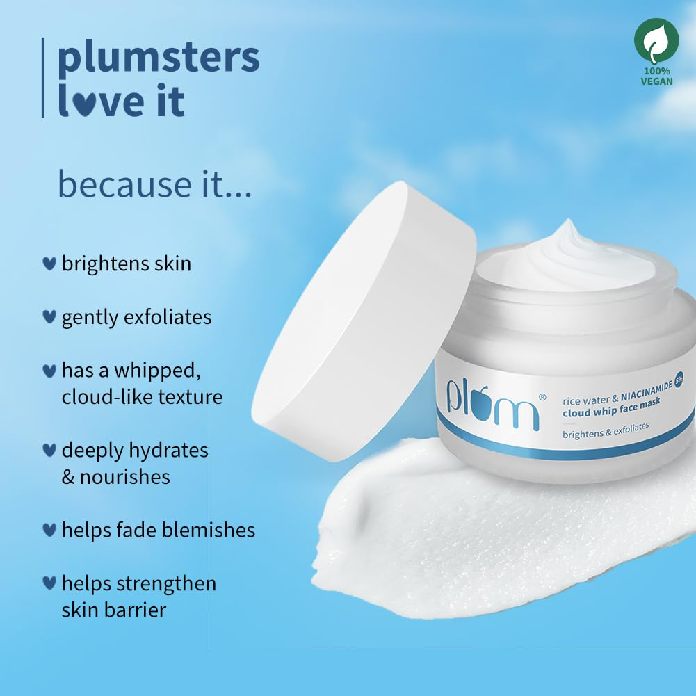

Rice Water Cloud Whip Face Mask
Inclusive of all taxes (50g)
"Light as a cloud, tough on oil. Your shortcut to bright, hydrated skin."
Meet the clay mask that doesn't dry you out. Formulated with **5% Niacinamide** to fade blemishes and **Kaolin Clay** to sweep away excess oil, this "cloud-like" whipped mask is enriched with **Rice Water** to deeply hydrate and brighten. It’s a deep detox that leaves your skin feeling bouncy and soft.
As an Amazon Associate, I earn from qualifying purchases.
Why We Love It
The texture is a total game-changer! Unlike traditional clay masks that crack and itch, this "Cloud Whip" stays creamy and comfortable. The 5% Niacinamide is at a perfect concentration to actually see results on pores and dark spots without causing irritation.
How to Use
- 01 On a clean face, apply an even layer of the whipped mask.
- 02 Relax for 10-15 minutes (it won't get uncomfortably dry!).
- 03 Gently massage with water while rinsing to soften skin.
Who It's For
- Oily and combination skin types prone to congestion.
- Anyone looking for brightening without the harshness of acids.
- Sensitive skin that finds regular clay masks too stripping.